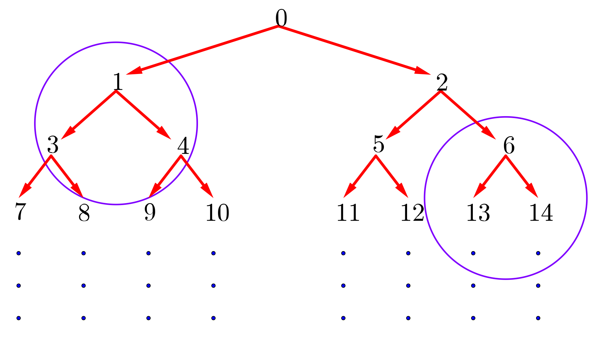

Problem of the Week
Problem E and Solution
Find the Way
Consider the following number tree.
In this number tree, the integers greater than or equal to 0 are written out in increasing order, with the top row containing one integer and every row after containing twice as many integers as the row above it.

Each integer is connected to two integers in the row below, one down and to the left and one down and to the right, as shown in the tree. For example, the number 5 is connected to the number 11 (down to the left) and the number 12 (down to the right) in the row below. Notice that we can get from 0 to 12 by going down right (R), down left (L), then down right (R).
What is the sequence of left (L) and right (R) movements to get from the number 0 to the number 1172 in the tree?
Solution
Solution 1
To begin, we will make an observation concerning the tree. When we perform a move to the left (L) from any number, we end up at an odd number. When we perform a move to the right (R) from any number, we end up at an even number. So the final move to get to the number 1172 was a move to the right (R) since 1172 is an even number. Is there a general formula which can be used to determine the number you end up at when asked to move right (R)? Is there a general formula which can be used when asked to move left (L)?
The diagram below has two parts of the tree circled.

Can we discover a pattern that takes us from each initial number to the odd and even numbers below? To get from 1 to 3 we could add 2 and to get from 1 to 4 we could add 3. But doing this from 6 would not get us to 13 and 14.
As we go down the tree, each new row has twice as many numbers as the row above. Let’s try multiplying the initial number by 2 and then seeing what is necessary to get to the odd and even number below. If we double 1, we get 2. Then we would need to add 1 to get to the odd number 3 below and add 2 to get to the even number 4 below. Does this work with the 6? If we double 6 and add 1, we get 13. It appears to work. If we double 6 and add 2, we get 14. It also appears to work.
So it would appear that if we make a move left (L) from any number \(a\) in the tree, the resulting number is one more than twice the value of \(a\). That is, a move left (L) from \(a\) takes us to the number \(2a+1\) in the tree.
It would appear that if we make a move right (R) from any number \(a\) in the tree, the resulting number is two more than twice the value of \(a\). That is, a move right (R) from \(a\) takes us to the number \(2a+2\) in the tree.
The results are true but unproven. This relationship has worked for all of the rows we have sampled but we have not proven it true in general. You will have to wait for some higher mathematics to be able to prove that this is true in general.
To go back up the tree, we could determine an inverse move to undo a move to the left (L) or to the right (R).
A move to the left (L) takes \(a\) to an odd number \(n\) such that \(n=2a+1\). Solving this equation for \(a\) we get \(a=\frac{n-1}{2}\). A move to the right (R) takes \(a\) to an even number \(n\) such that \(n=2a+2\). Solving this equation for \(a\) we get \(a=\frac{n-2}{2}\).
We can now move from 1172 up the tree to 0 using the appropriate inverse formula each time.
| Initial Number | Odd or Even | Calculation | Previous Number |
|---|---|---|---|
| 1172 | even | \(\frac{1172-2}{2}\) | 585 |
| 585 | odd | \(\frac{585-1}{2}\) | 292 |
| 292 | even | \(\frac{292-2}{2}\) | 145 |
| 145 | odd | \(\frac{145-1}{2}\) | 72 |
| 72 | even | \(\frac{72-2}{2}\) | 35 |
| 35 | odd | \(\frac{35-1}{2}\) | 17 |
| 17 | odd | \(\frac{17-1}{2}\) | 8 |
| 8 | even | \(\frac{8-2}{2}\) | 3 |
| 3 | odd | \(\frac{3-1}{2}\) | 1 |
| 1 | odd | \(\frac{1-1}{2}\) | 0 |
From our work in the table above, we can see that the path to 1172 goes through the following numbers:
\[0\rightarrow 1\rightarrow 3\rightarrow 8\rightarrow 17\rightarrow 35\rightarrow 72\rightarrow 145\rightarrow 292\rightarrow 585\rightarrow 1172\]
By looking at each successive number in the sequence in terms of its parity (odd or even) we can determine the required sequence of moves:
A solution that does not require the use of the unproven result is provided on the next page.
Solution 2
Which row of the tree contains the number 1172?
To get from the top integer to the rightmost integer in row 2, add 2. To get from the rightmost integer in row 2 to the rightmost integer in row 3, add 4. To get from the rightmost integer in row 3 to the rightmost integer in row 4, add 8. These numbers which are added correspond to the number of integers in the next row. Working through this we can discover that 1172 is in the 11th row.
The rightmost integer in row 10 is: \(0+2+4+8+16+32+64+128+256+512=1022\).
The rightmost integer in row 11 is: \(0+2+4+8+16+32+64+128+256+512+1024=2046\).
It follows that the number 1172 is in row 11 which contains the 1024 integers ranging from 1023 (1 more than the last integer in row 10) to 2046 (the rightmost integer in row 11), inclusive.
Now we look at the commands to narrow down where we will be in the 11th row.
Row 11 can be broken into two halves, the left half contains 1023 to 1534 and the right half contains 1535 to 2046. The number 1172 is in the left half, so we needed to go left (L) first from row 1 to row 2.
Row 11 from 1023 to 1534 can be broken into two halves, the left half contains 1023 to 1278 and the right half contains 1279 to 1534. The number 1172 is in the left half, so we needed to go left (L) from row 2 to row 3.
Row 11 from 1023 to 1278 can be broken into two halves, the left half contains 1023 to 1150 and the right half contains 1151 to 1278. The number 1172 is in the right half, so we needed to go right (R) from row 3 to row 4.
Row 11 from 1151 to 1278 can be broken into two halves, the left half contains 1151 to 1214 and the right half contains 1215 to 1278. The number 1172 is in the left half, so we needed to go left (L) from row 4 to row 5.
Row 11 from 1151 to 1214 can be broken into two halves, the left half contains 1151 to 1182 and the right half contains 1183 to 1214. The number 1172 is in the left half, so we needed to go left (L) from row 5 to row 6.
Row 11 from 1151 to 1182 can be broken into two halves, the left half contains 1151 to 1166 and the right half contains 1167 to 1182. The number 1172 is in the right half, so we needed to go right (R) from row 6 to row 7.
Row 11 from 1167 to 1182 can be broken into two halves, the left half contains 1167 to 1174 and the right half contains 1175 to 1182. The number 1172 is in the left half, so we needed to go left (L) from row 7 to row 8.
Row 11 from 1167 to 1174 can be broken into two halves, the left half contains 1167 to 1170 and the right half contains 1171 to 1174. The number 1172 is in the right half, so we needed to go right (R) from row 8 to row 9.
Row 11 from 1171 to 1174 can be broken into two halves, the left half contains 1171 to 1172 and the right half contains 1173 to 1174. The number 1172 is in the left half, so we needed to go left (L) from row 9 to row 10.
And finally, row 11 from 1171 to 1172 can be broken into two halves, the left half contains 1171 and the right half contains 1172. The number 1172 is in the right half, so we needed to go right (R) from row 10 to row 11.
Therefore, we get to 1172 using the following sequence of movements:
\[\mbox{L}\rightarrow \mbox{L}\rightarrow \mbox{R}\rightarrow \mbox{L}\rightarrow \mbox{L}\rightarrow \mbox{R}\rightarrow \mbox{L}\rightarrow \mbox{R}\rightarrow \mbox{L}\rightarrow \mbox{R}\]